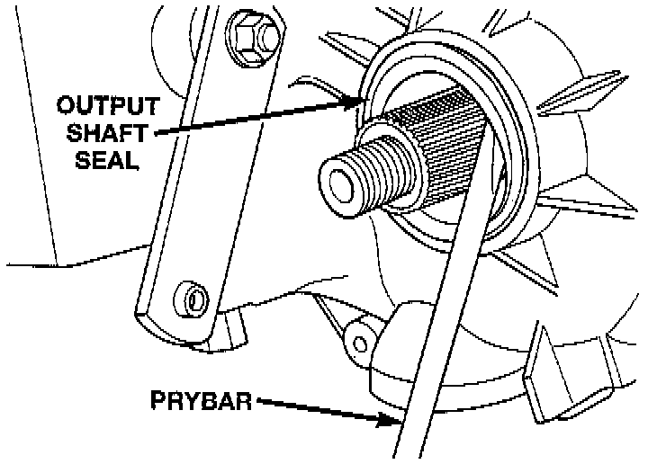
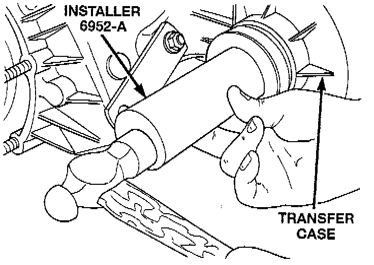

Front Output Shaft Seal Replacement

REMOVAL
1. Raise vehicle.
2. Remove front propeller shaft.
3. Remove front output shaft yoke.
4. Remove seal from front case with pry tool.

INSTALLATION
Install new front output seal in front case with Installer Tool 6952-A, or equivalent as follows:
1. Place new seal on tool. Garter spring on seal goes toward interior of case.
2. Start seal in bore with light taps from hammer. Once seal is started, continue tapping seal into bore until installer tool seats against case.